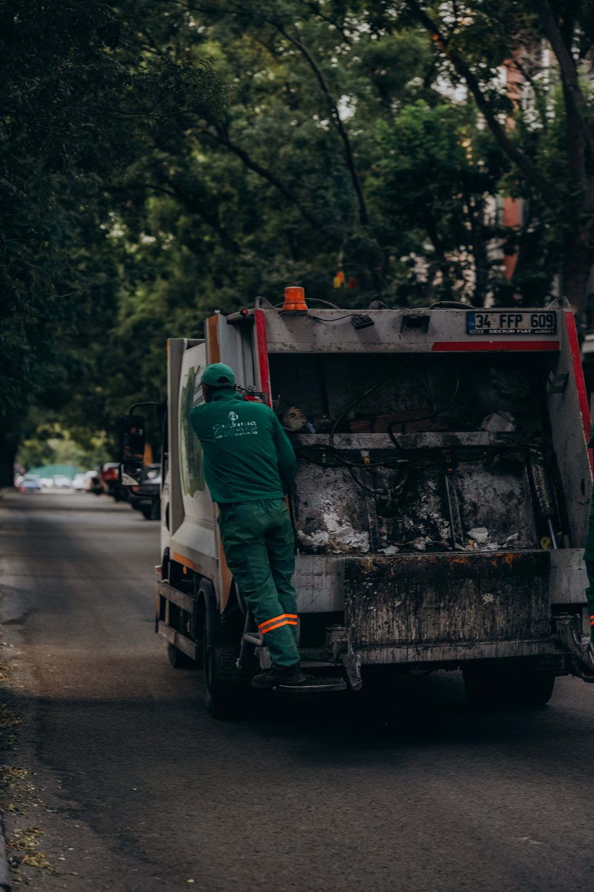
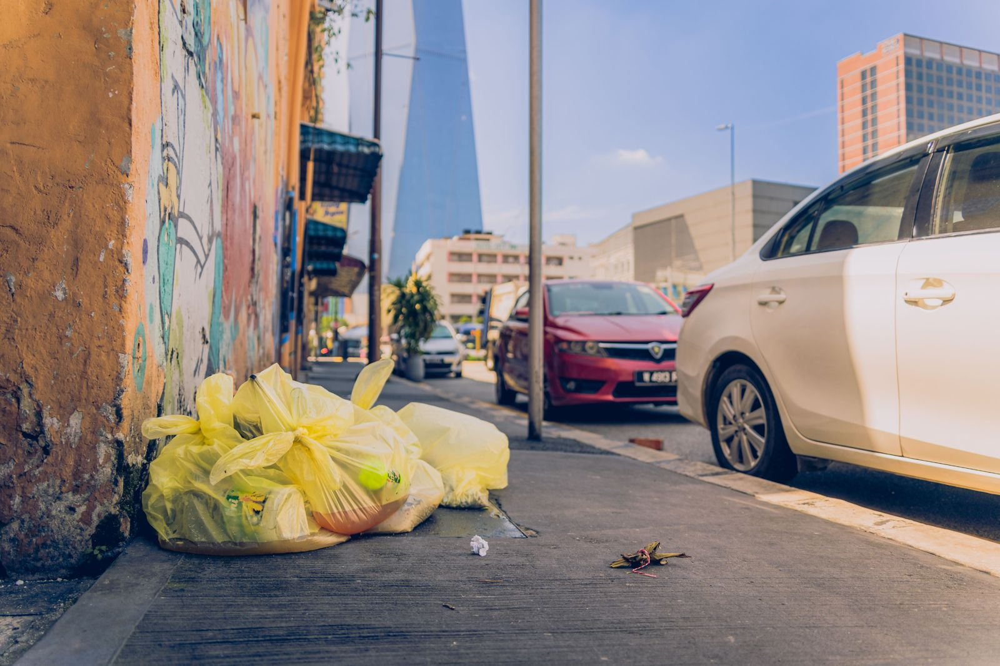

GreenLine Waste Services Ltd
Service Area: Nakawa Division (Bukoto, Ntinda)
Services: Household sacks, commercial bins, recyclables
Phone: +256 700 000 111
Place sorted waste at your designated collection point before the scheduled time window.
| Division / Parish | Collection Days | Time Window | Designated Collection Point |
|---|---|---|---|
| Nakawa – Bukoto I | Tuesday&Friday | 7:00 AM – 11:00 AM | Bukoto Market Stage Junction |
| Nakawa – Ntinda | Wednesday&Saturday | 7:30 AM – 12:00 PM | Ntinda Stretcher Road Skip |
| Central – Kamwokya II | Monday &Thursday | 6:30 AM – 10:30 AM | Kira Road Community Point |
Contact an authorized service provider in your area for household or business collection arrangements.

Service Area: Nakawa Division (Bukoto, Ntinda)
Services: Household sacks, commercial bins, recyclables
Phone: +256 700 000 111
Service Area: Central Division (Kamwokya, Kololo)
Services: Door-to-door collection, organic waste pickup
Phone: +256 700 000 222
Use this form to report missed collections, overflowing points, or illegal dumping. Note: Reports are reviewed by an administrator and do not guarantee immediate pickup.
